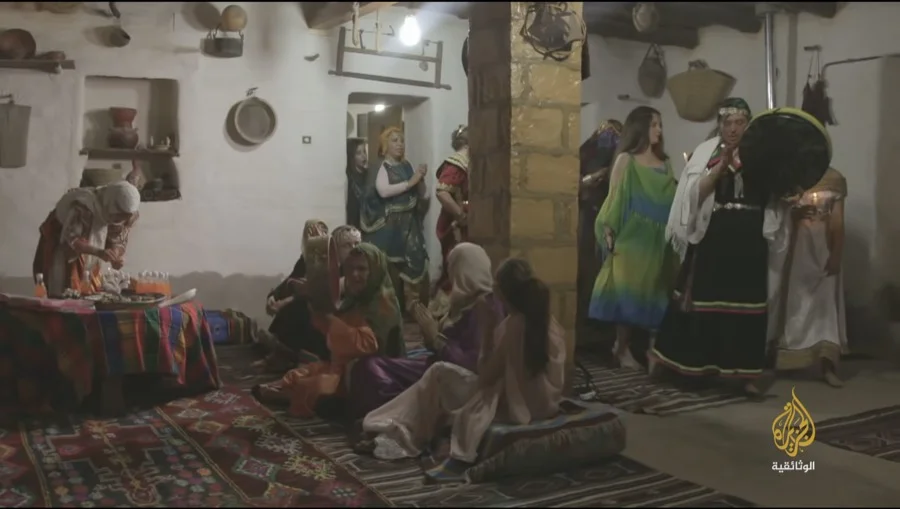
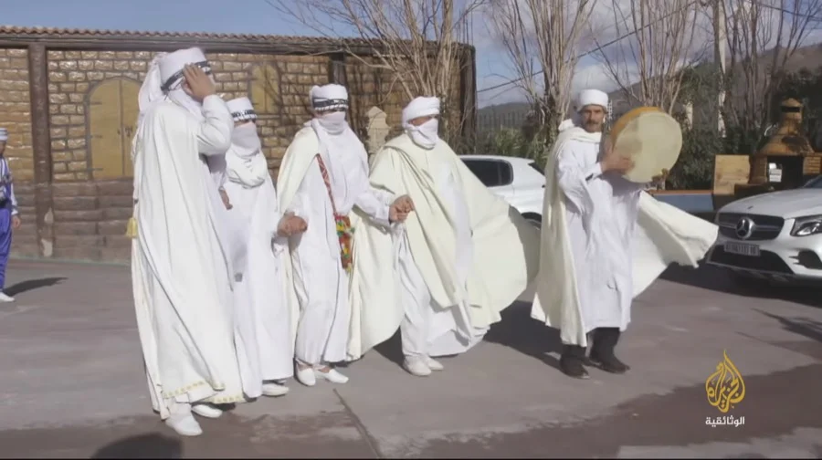
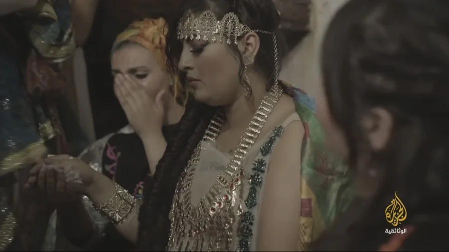
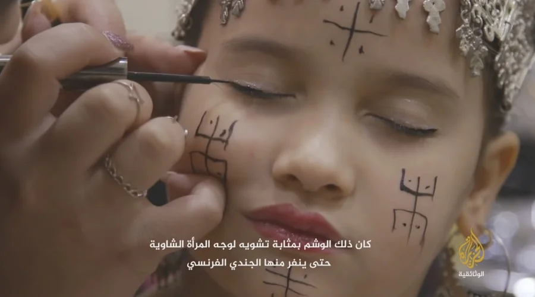

في جبال الأوراس شرق الجزائر، لا تبدو الأعراس مجرد مناسبات اجتماعية عابرة، بل طقوساً جماعية تحمل داخلها ذاكرة المنطقة وهويتها وروحها القديمة. هناك، وسط القرى الجبلية والسهول الممتدة، ما تزال الأعراس الشاوية تحتفظ بجزء كبير من تفاصيلها التقليدية، رغم التحولات التي عرفها المجتمع الجزائري خلال السنوات الأخيرة.
في وثائقي "أعراس عربية.. العرس الشاوي"، حاولنا الاقتراب من هذا العالم من الداخل، ليس فقط باعتباره احتفالاً بالزواج، بل بوصفه مساحة تلتقي فيها الموسيقى والذاكرة والعادات الجماعية في مشهد بصري غني بالتفاصيل الإنسانية.

ليلة الحناء — النساء يجتمعن في طقس مليء بالأغاني والزينة التقليدية، الجزيرة الوثائقية
الموسيقى… امتداد طبيعي للحياة
أكثر ما شدني خلال العمل على الفيلم هو حضور الموسيقى داخل الحياة اليومية للناس. فالرحابة والقصبة والبندير لم تكن مجرد عناصر احتفالية، بل جزءاً من ذاكرة جماعية ما تزال حية داخل المنطقة. كانت الأغاني تُؤدى بعفوية كبيرة، وكأنها امتداد طبيعي لحياة الناس هناك، لا مجرد استعراض مخصص للكاميرا.
الفيلم يأخذ المشاهد إلى قلب الأوراس، حيث تبدأ التحضيرات للعرس قبل أيام طويلة من موعد الاحتفال. العائلات تجتمع، النساء ينهمكن في تحضير الطعام والملابس التقليدية، بينما يتحول البيت تدريجياً إلى فضاء مفتوح للأغاني والزغاريد واستقبال الضيوف.

موكب الرجال بالزي الشاوي التقليدي — طقس الاستقبال والاحتفال
العروس والوشم… هوية تُرسم على الوجه
ليلة الحناء بدت واحدة من أكثر اللحظات حساسية داخل الفيلم. النساء يجتمعن حول العروس في طقس مليء بالأغاني والدعوات والزينة التقليدية، بينما يسود نوع من الهدوء الذي يسبق صخب الاحتفال الكبير. حاولنا بصرياً أن نحافظ على هذا الإحساس الحميمي، وأن نقترب من التفاصيل الصغيرة دون افتعال.

العروس بالحلي الأمازيغية الفضية — كل قطعة تحمل قصة متوارثة عبر الأجيال
الوشم الأمازيغي… مقاومة منقوشة على الجلد

"كان ذلك الوشم بمثابة تشويه لوجه المرأة الشاوية حتى ينفر منها الجندي الفرنسي" — مشهد من الفيلم
"الملحفة الشاوية" والحلي الفضية لم يظهرا باعتبارهما مجرد زينة، بل كجزء من هوية متوارثة عبر الأجيال. وشم الوجه، الذي كانت المرأة الشاوية ترسمه على خديها وجبهتها، لم يكن في الأصل مجرد زينة — بل كان في زمن الاحتلال الفرنسي وسيلة مقاومة: تشويه متعمد للوجه حتى ينفر منه الجندي الفرنسي. هذه التفاصيل التي يكشفها الفيلم تحول العرس البسيط إلى وثيقة تاريخية حية.
"في كل أغنية، وكل لباس، وكل قرعة بندير، هناك رغبة واضحة في الحفاظ على ذاكرة جماعية ما تزال تقاوم التآكل رغم تغير الزمن."
ما وراء الكاميرا
بصرياً، كان العمل على هذا الوثائقي تجربة غنية جداً بالنسبة لي. كان التحدي الحقيقي هو نقل روح المكان دون مبالغة، والحفاظ على صدق اللحظة وسط كل هذا الزخم البصري والصوتي.
حاولنا أن تتحرك الكاميرا بهدوء داخل الفضاءات، وأن تقترب من الوجوه والتفاصيل الصغيرة: حركة الأيدي، أصوات الرحابة، الغبار المتصاعد مع الخيول، نظرات النساء، وملامح الفرح الجماعي التي تملأ المكان. لم يكن الهدف توثيق العرس فقط، بل محاولة التقاط الإحساس الذي يصنعه هذا الاحتفال داخل الناس.
ما بقي عالقاً في ذهني بعد انتهاء العمل هو أن العرس الشاوي ليس مجرد طقس اجتماعي، بل شكل من أشكال مقاومة النسيان. ربما لهذا تجاوز الفيلم 2.5 مليون مشاهدة — لأنه لمس شيئاً حقيقياً في النفس الإنسانية، شيئاً يخص الهوية والتعلق بالجذور.
In the Aurès mountains of eastern Algeria, weddings are not merely passing social occasions but collective rituals carrying within them the memory, identity, and ancient spirit of the region. There, amid mountain villages and open plains, Chaoui weddings still preserve much of their traditional detail, despite the transformations Algerian society has undergone in recent years.
In the documentary "Arab Weddings: The Chaoui Wedding," we tried to approach this world from the inside — not only as a celebration of marriage, but as a space where music, memory, and collective customs converge in a visually rich tableau of human details.
Henna night — women gathering in a ritual filled with songs and traditional adornment, Al Jazeera Documentary
Music… A Natural Extension of Life
What captivated me most while working on the film was the presence of music within the daily lives of the people. The rahaba, gasba, and bendier were not merely festive elements, but part of a collective memory still alive within the region. Songs were performed with great spontaneity, as if they were a natural extension of people's lives there, not merely a display staged for the camera.
The film takes the viewer to the heart of the Aurès, where wedding preparations begin days before the celebration. Families gather, women busy themselves preparing food and traditional clothing, while the house gradually transforms into an open space for songs, ululations, and welcoming guests.
Men's procession in traditional Chaoui dress — the ritual of welcome and celebration
The Bride and the Tattoo… An Identity Drawn on the Face
Henna night appeared as one of the most tender moments in the film. Women gather around the bride in a ritual filled with songs, blessings, and traditional adornment, while a kind of stillness prevails — the kind that precedes the noise of the great celebration. Visually, we tried to preserve this intimate feeling and draw close to the small details without artifice.
The bride with silver Amazigh jewellery — each piece carries an inherited story through the generations
The Amazigh Tattoo… Resistance Engraved on Skin
"It was a mark that disfigured the Chaoui woman's face to repel the French soldier" — a scene from the film
The "Chaoui mlahfa" and silver jewellery were not presented as mere decoration, but as part of an identity inherited through the generations. The facial tattoo, which a Chaoui woman would draw on her cheeks and forehead, was not originally just adornment — during French colonial rule, it was a means of resistance: a deliberate disfigurement of the face to repel the French soldier. These details revealed by the film turn a simple wedding into a living historical document.
"In every song, every garment, every drum beat, there is a clear desire to preserve a collective memory that continues to resist erosion despite the changing times."
Behind the Camera
Visually, working on this documentary was an extremely rich experience for me. The real challenge was to convey the spirit of the place without exaggeration, and to preserve the authenticity of the moment amid all this visual and auditory richness.
We tried to move the camera quietly through the spaces, drawing close to faces and small details: the movement of hands, the sounds of the rahaba, dust rising with the horses, the women's gazes, and expressions of collective joy filling the space. The goal was not only to document the wedding, but to try to capture the feeling this celebration creates within people.
What stayed with me after the work ended is that the Chaoui wedding is not merely a social ritual, but a form of resisting oblivion. Perhaps that is why the film surpassed 2.5 million views — because it touched something real in the human soul, something that concerns identity and attachment to roots.